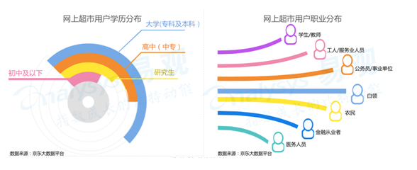

访谈目的：统计有哪些外界因素会影响用户的工作效率以及影响程度？
用户访谈

可以看到白领已经成为网购主力，相应的收发快递的需求也就越来越大。但是访谈中用户提出的解决方法显然不可取，快递公司不会为了某个公司而延误派件，所以我认为可以设置一个临时存放点配合APP使用。
而关于同事闲聊，我认为这是不可避免的，但是个人就可以解决的，故不列为需求。
访谈结论：通过本次访谈得出在工作中用户对于外界干扰因素的统计，基本确定用户痛点。
下一步与定量分析结合，明确用户需求。

白领已经成为网购主力（图片来自京东大数据平台）
目标用户：李伟（互联网公司设计师）
进行访谈：
Q：在你日常工作中，哪些外界因素会对你造成干扰呢？
A：因为我是刚进公司，所以boss为了让我快速熟悉公司，就经常让我帮各部门预订会议室，我就要各部门之间来回跑、询 问，浪费我很多时间；还有我经常加班，所以快递经常是收不到的，但是在上班时间收发快递又会打断我工作；再就是旁边的人经常找我闲聊也会打断我工作。
Q：能否请你将这些因素按照影响程度排下序呢？
A：预订会议室>收发快递>同事闲谈
Q：这些因素是怎样影响你工作的呢？
A：就浪费我的时间啊，打断我的思路啊这种。项目本来就急着上线，这样一弄就又得疯狂加班了；而且那个会议室每次我们组要开会都没有空的，就因为这个上线都晚了两天！
Q:那么你认为怎样处理这些因素以保证自己的工作效率呢？
A：先说预定会议室吧，我觉得让公司招个前台专门做这个最好，但是我们属于初创公司，可能暂时没这个计划，也没这个资金。
对于收发快递，我觉得可以跟快递公司商量下，等到某个时间一块收发，比如吃饭、休息时间。
对于我同事，我强烈要求换个座位！
访谈分析：在本次访谈中，用户针对影响工作效率的外界因素主要提出了三点：预订会议室、收发快递以及同事闲谈。
对于会议室，现在不少公司甚至大公司都使用不规范，即使雇佣前台，也会有人不通过前台擅自使用，我认为可以在全公司统一使用规范，按时间进行预订、使用和取消。
对于收发快递，我统计了近年来的网购数据，如下：